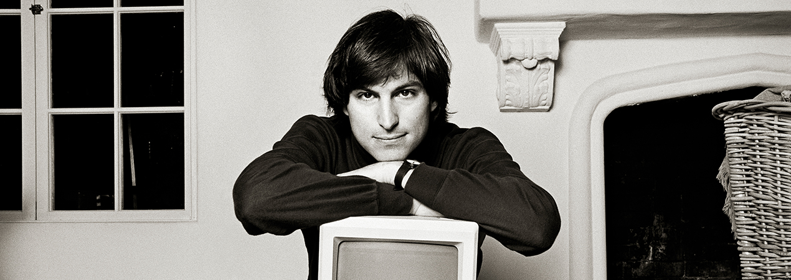

| Раннє життя | Apple | NeXT і Pixar | Повернення до Apple | Спадщина |
|  | ||||
|
Steve Jobs
Former CEO of Apple |
||||
Раннє життяСтів Джобс народився 24 лютого 1955 року в Сан-Франциско, Каліфорнія. Його біологічні батьки, Джоан Шибле та Абдулфаттах Джандалі, віддали його на усиновлення. Пол і Клара Джобс стали його прийомними батьками. Зростаючи в Купертіно, Каліфорнія, молодий Стів виявляв великий інтерес до електроніки. Його батько, який був механіком і теслярем, познайомив його з основами електроніки в їхньому гаражі, навчаючи розбирати та збирати різні пристрої. У підлітковому віці Джобс відвідував лекції в Hewlett-Packard після школи, де він зустрів свого майбутнього ділового партнера, Стіва Возняка. У 1972 році Джобс вступив до Reed College, але кинув навчання після першого семестру. Однак він продовжував відвідувати окремі курси, включаючи каліграфію, що пізніше вплинуло на дизайн першого Macintosh комп'ютера. AppleУ 1976 році Джобс і Возняк заснували Apple Computer у гаражі батьків Джобса. Їхній перший продукт, Apple I, був персональним комп'ютером, який продавався як набір для самостійного складання. Успіх Apple I призвів до створення Apple II у 1977 році, який став одним з перших масово успішних мікрокомп'ютерів. У 1984 році Apple представила Macintosh, перший персональний комп'ютер з графічним інтерфейсом користувача. Це було революційне досягнення, але високі ціни та обмежене програмне забезпечення спочатку обмежували його успіх. Внутрішні конфлікти з радою директорів призвели до того, що Джобс залишив Apple у 1985 році. NeXT і PixarПісля виходу з Apple, Джобс заснував NeXT Computer. NeXT створював високопродуктивні робочі станції для освіти та бізнесу. Хоча комп'ютери NeXT не досягли широкого комерційного успіху, їхнє передове програмне забезпечення мало довготривалий вплив на індустрію. У 1986 році Джобс придбав підрозділ комп'ютерної графіки Lucasfilm, який пізніше став Pixar Animation Studios. Під керівництвом Джобса Pixar став піонером у створенні комп'ютерних анімаційних фільмів, випустивши такі хіти, як "Історія іграшок" (1995), перший повнометражний комп'ютерний анімаційний фільм. У 2006 році Disney купив Pixar за 7,4 мільярда доларів. Повернення до AppleУ 1997 році Apple, яка на той час переживала фінансові труднощі, купила NeXT за 429 мільйонів доларів, що повернуло Джобса до компанії як тимчасового CEO. Він швидко реорганізував лінійку продуктів Apple, представивши iMac у 1998 році та iPod у 2001 році. Ці продукти допомогли відновити фінансове здоров'я та репутацію Apple. У 2007 році Джобс представив iPhone, який революціонізував індустрію смартфонів. За ним у 2010 році послідував iPad, який створив новий ринок планшетних комп'ютерів. Під керівництвом Джобса Apple перетворилася з майже збанкрутілої компанії на одну з найцінніших у світі. СпадщинаСтів Джобс помер 5 жовтня 2011 року після тривалої боротьби з раком підшлункової залози. Його вплив на технологічну індустрію неможливо переоцінити. Джобс був відомий своїм перфекціонізмом, інноваційним мисленням та здатністю передбачати технологічні тренди. Його підхід до дизайну продуктів, зосереджений на простоті та зручності використання, змінив спосіб взаємодії людей з технологіями. Apple продовжує слідувати його філософії, випускаючи продукти, які поєднують технологічні інновації з елегантним дизайном. |
||||
| Авторські права зареєстровані © 2024 | Миропольцев Єгор | ||||